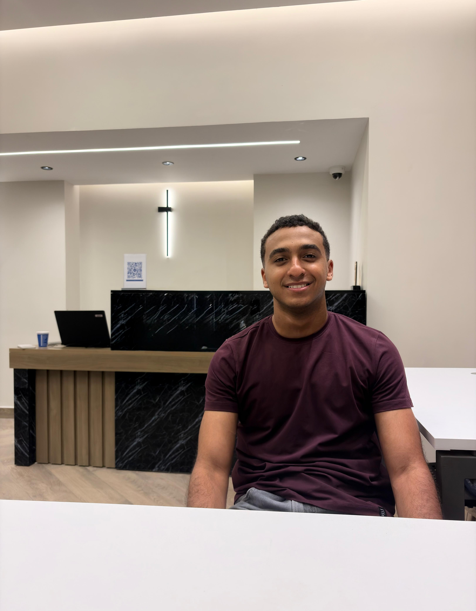

Open to internships in AI, machine learning, and data engineering
Hamza Ibrahim Aspiring AI Engineer, Machine Learning Engineer, and Data Engineer
Building intelligent solutions through data & AI.
Third-year Computer Science and Artificial Intelligence student at Helwan University. I build data pipelines with Python and SQL, and I am developing machine learning skills through training and projects, including a CNN image classifier and ensemble classification models.

About me
Two connected areas of focus: data engineering and machine learning.
I am a third-year Computer Science and Artificial Intelligence student at Helwan University, working across data engineering and machine learning.
On the data side, I have used Python and SQL to build and maintain data pipelines, manage databases, and design a data warehouse workflow. On the machine learning side, I am training at Route Academy and building fundamentals through projects: a CNN image classifier and a comparison of ensemble models on tabular data.
I like projects where the result is something you can run and measure. I am looking for an internship in AI, machine learning, or data engineering where I can keep learning on real problems.
- Computer Science and AI
- B.Sc. at Helwan University, 2024–2028. Grade: Very Good.
- Data engineering
- Python, SQL, data pipelines, and data warehousing through the Digital Egypt Pioneers Initiative and the Student Churn project.
- Machine learning and deep learning
- Supervised and unsupervised learning, ANNs, CNNs, and computer vision, practiced in Python with scikit-learn and TensorFlow/Keras.
- Real-world solutions
- Projects range from image classification and ensemble models to a Java desktop application and a simulated WAN.
- Based in
- Maadi, Cairo, Egypt. English (B2) and French (basic).
Technical skills
Grouped by what I use them for. Each one appears in the training or projects below.
Data engineering and databases
Programming languages
Deep learning and computer vision
Cloud and visualization
Python libraries
Other
Experience
Structured training programs in data engineering and machine learning.
-
July 2026 – Present
AI and Machine Learning Trainee
Route Academy
- Training in supervised and unsupervised learning, machine learning algorithms, and model evaluation.
- Studying deep learning, ANNs, computer vision with CNNs, and natural language processing.
- Practicing model implementation in Python with NumPy, Pandas, scikit-learn, and TensorFlow/Keras.
-
November 2025 – July 2026
Data Engineer
Digital Egypt Pioneers Initiative (DEPI)
- Applied prompt engineering and studied applied AI techniques for AI-driven data engineering workflows.
- Performed SQL-based database management and query optimization.
- Built and maintained data pipelines for structured and unstructured data.
- Studied big data processing and completed training aligned with the Microsoft Azure Data Engineer Associate track.
Featured projects
Three machine learning and data projects first, then four from coursework in systems, web, Java, and networking.
Input image
3 × Conv2D + MaxPooling
3 dense layers
15 classes
CNN image classification
Vegetable image dataset, 15 classes
- Prepared 15,000 training, 3,000 validation, and 3,000 test images with ImageDataGenerator (resize and rescale).
- Built a Sequential CNN with 3 Conv2D/MaxPooling blocks and 3 dense layers, trained for 5 epochs with Adam and cross-entropy loss.
- Evaluated accuracy and loss on the training, validation, and test sets.
- Test accuracy
- 92.8%
- Validation accuracy
- 93.2%
- Dataset 13,611 samples, 16 features, 7 classes
- Clean 68 duplicates removed, outliers clipped (IQR, Z-score)
- Prepare Stratified 80/20 split, scaling, label encoding
- Compare Decision trees, bagging, Random Forest, Gradient Boosting, XGBoost
- Evaluate Classification reports and confusion matrices
Ensemble learning for dry bean classification
Tabular classification, 7 bean classes
- Compared decision trees (default and GridSearchCV-tuned), bagging with SVC and decision trees, Random Forest, Gradient Boosting, and XGBoost.
- Tuned n_estimators, max_features, learning rate, and subsample with GridSearchCV.
- Ensemble test accuracy
- 91–92%
- Single decision tree
- 90%
- Python scripts
- Database
- Data warehouse
- Automation
- Power BI
Student churn prediction
Data engineering project
- Developed a data engineering project for student churn analysis.
- Used Python, SQL, data pipelines, and data warehousing.
- Designed a structured data processing workflow.
- Used Power BI for analytics and visualization.
Smart Urban Parking System
System architecture
Led the analysis, design, and implementation of a system architecture project.
E-Commerce Clothing Store
Front-end web development
Built a responsive front-end website using HTML, CSS, and JavaScript.
Project Management System
Java desktop application
Designed and developed an object-oriented desktop application in Java.
Government Agency Network Simulation
Networking
Designed and configured a multi-router WAN in Cisco Packet Tracer, including NAT/PAT and connectivity troubleshooting.
Certifications
Courses and programs completed alongside university.
-

Machine Learning Specialization
DeepLearning.AI
-

IBM AI Developer Professional Certificate
IBM
-
Data Engineering
DEPI
-

AI and Machine Learning
Sprints x Microsoft Summer Camp
Education
2024–2028
Helwan University
B.Sc. in Computer Science and Artificial Intelligence
Contact Me
Open to internships in AI, machine learning, and data engineering.
-
Email
hamzaaaa12007@gmail.com -
Address
Maadi, Cairo, Egypt